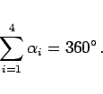
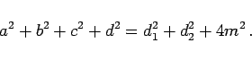
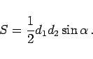

Im allgemeinen Viereck gibt es keine parallelen Seiten, d.h. alle vier Seiten sind verschieden lang. Verlaufen die Diagonalen vollständig im Innern des Vierecks, dann ist es ein konvexes Viereck, anderenfalls ein konkaves. Das allgemeine Viereck kann durch jeweils eine Diagonale in zwei Dreiecke zerlegt werden (d1,d2 in der Abbildung). Daher beträgt in jedem Viereck die Summe der Innenwinkel :
|  | (3.36) |
Die Strecke  , die die Mittelpunkte der beiden Diagonalen miteinander verbindet, berechnet sich aus
, die die Mittelpunkte der beiden Diagonalen miteinander verbindet, berechnet sich aus
|  | (3.37) |
Der Flächeninhalt des allgemeinen Vierecks beträgt
|  | (3.38) |